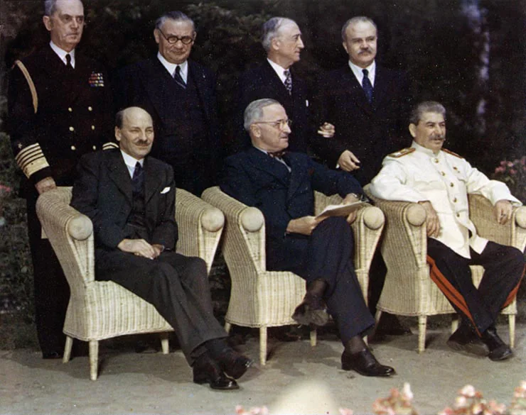
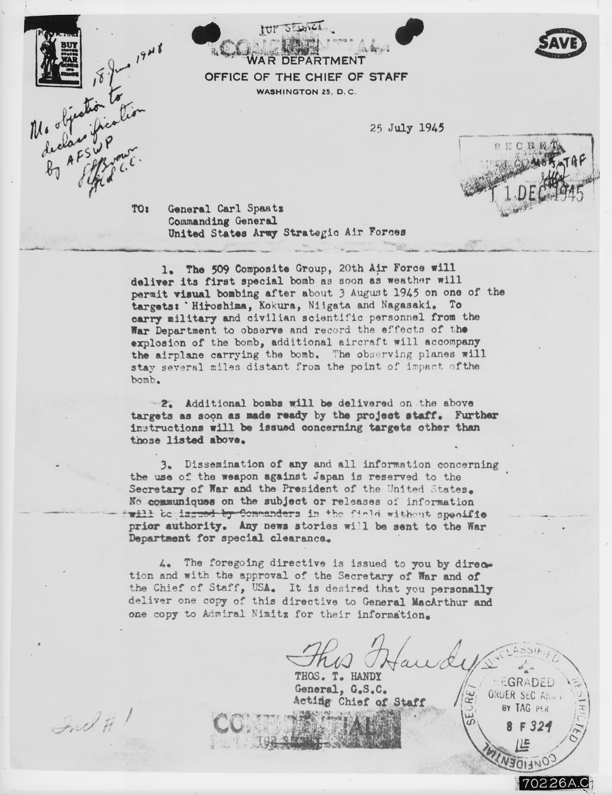
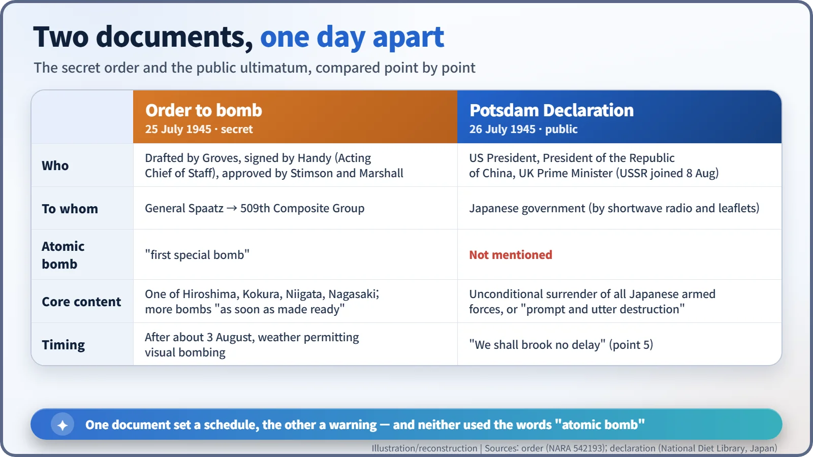
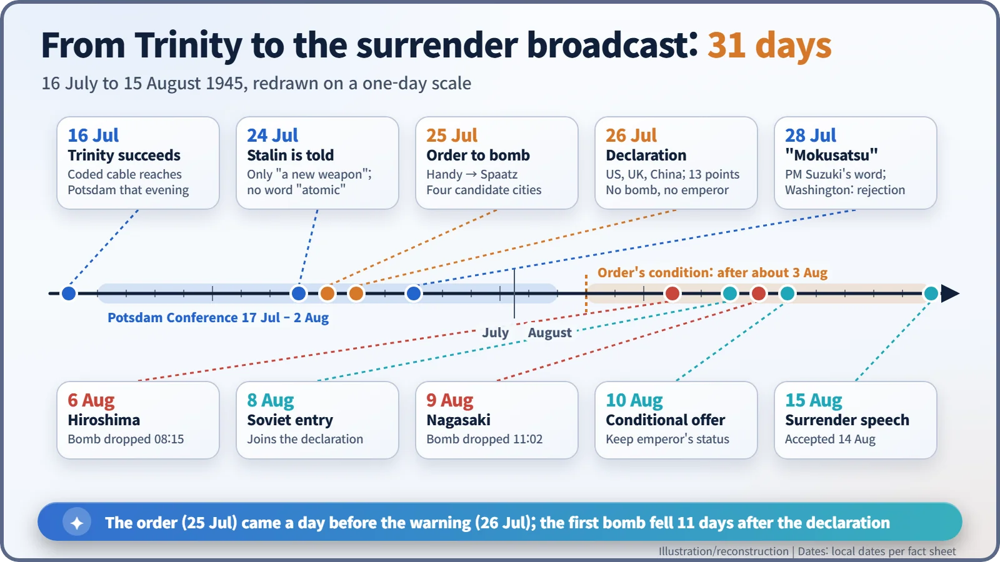

Nuclear History · 118
The Order That Came Before the Warning — The Potsdam Declaration and the Decision to Drop the Bomb (1945)
The order to use the first atomic bomb was signed a day before the Allies publicly warned Japan of "prompt and utter destruction".
On 25 July 1945 a secret U.S. Army order assigned the first atomic bomb to one of four Japanese cities "after about 3 August." The next day the United States, Britain and China issued the Potsdam Declaration, warning Japan of "prompt and utter destruction" without mentioning the bomb or the emperor. Japan's prime minister answered with a single word, mokusatsu.
Two documents, one day apart
Put two dated documents side by side. The first is a secret U.S. Army order dated 25 July 1945. It says that a "first special bomb" is to be delivered "as soon as weather will permit visual bombing after about 3 August 1945" on one of four Japanese cities. The second is a public proclamation dated 26 July 1945. It tells Japan that if it does not surrender, the alternative is "prompt and utter destruction." The order came first. The warning followed a day later. This is the story of the week in which those two pieces of paper were written. [1] [4]
A cable in the palace garden
On 17 July 1945, two months after Germany's surrender, the Allied leaders met at the Cecilienhof Palace in Potsdam, outside Berlin: Harry S. Truman (1884–1972) of the United States, Joseph Stalin (1878–1953) of the Soviet Union and Winston Churchill (1874–1965) of Britain. Truman had been president for barely three months, since Franklin Roosevelt's death in April.
The day before the conference opened, at dawn on 16 July, the Trinity test had succeeded in the New Mexico desert. That evening a coded cable reached Secretary of War Henry L. Stimson in Potsdam, and on 21 July a detailed report from General Leslie R. Groves arrived and was read to Truman. The atomic bomb was no longer a weapon that might work. It was a weapon that existed. [2]

24 July: a word without an interpreter
On the evening of 24 July, after the day's session, Truman walked over to Stalin and mentioned that the United States had "a new weapon of unusual destructive force." He did not say the word "atomic." According to Truman's memoirs, Stalin showed little interest and said he hoped the Americans would make "good use of it against the Japanese." He had little reason to be surprised: Soviet intelligence had been following the project through its spy networks since the autumn of 1941. [2]
25 July: four names on a page
The next day the order went out. Groves wrote the draft. Because the Army Chief of Staff, General George C. Marshall, was in Potsdam, it was signed by the Acting Chief of Staff, Thomas T. Handy (1892–1982), and addressed to General Carl A. Spaatz, commander of the U.S. Army Strategic Air Forces.
- The 509th Composite Group was to bomb one of four targets: "Hiroshima, Kokura, Niigata and Nagasaki."
- "Additional bombs will be delivered on the above targets as soon as made ready by the project staff." No fresh authorization would be needed for a second attack.
- Information about the weapon's use was reserved to the Secretary of War and the President.
- The directive was issued with the approval of the Secretary of War and the Chief of Staff.
The same day, Truman wrote in his diary: "We have discovered the most terrible bomb in the history of the world." The weapon, he noted, "is to be used against Japan between now and August 10th," and he had told Stimson to use it "so that military objectives and soldiers and sailors are the target and not women and children." He added: "we will issue a warning statement asking the Japs to surrender and save lives." [5]

26 July: an ultimatum in 13 points
That warning was the Potsdam Declaration, formally the "Proclamation Defining Terms for Japanese Surrender," in 13 points. A common error is worth correcting here. It was issued in the names of the President of the United States, the President of the National Government of the Republic of China (Chiang Kai-shek) and the Prime Minister of Great Britain. The Soviet Union, not yet at war with Japan, was not a party. Chiang was not at Potsdam; he gave his approval by telegram from Chongqing. Some accounts, including an official U.S. history web page, wrongly list the issuers as Truman, Stalin and Attlee. [1]
Point 5 is blunt: "Following are our terms. We will not deviate from them. There are no alternatives. We shall brook no delay." Point 13 calls for "the unconditional surrender of all Japanese armed forces" and ends: "The alternative for Japan is prompt and utter destruction."
What the declaration left out is just as telling. It did not mention the atomic bomb, and it said nothing about the future of the emperor. Some historians point out that a draft prepared on Stimson's side had included language allowing a constitutional monarchy under the current dynasty, and that it was dropped from the final text. The declaration reached Japan not through diplomatic channels but by shortwave radio and leaflets. On the same day, half a world away, the cruiser USS Indianapolis unloaded components of the Little Boy bomb at Tinian. [2]

28 July: one word, mokusatsu
Japan's government was still hoping that the Soviet Union would mediate an end to the war, and Foreign Minister Shigenori Tōgō urged caution while waiting for Moscow's reply. But on 28 July Prime Minister Kantarō Suzuki (1868–1948) told a press conference that the government would treat the declaration with mokusatsu. The word combines "silence" and "kill." It means to ignore or treat with silent contempt; some dictionaries also give "to withhold comment."
From the 1950s onward a story spread that the bombs fell because the Allies mistranslated the word as "ignore." Most modern historians, including Robert Butow, conclude that the Allies understood it correctly, and that Suzuki's remark, made with one eye on the military, amounted to a rejection. Washington certainly read it that way: Truman's statement after Hiroshima on 6 August said Japan's leaders had promptly rejected the ultimatum of 26 July. [6]

The question the two documents leave
The order preceded the warning, but its trigger was "after about 3 August," weather permitting. What would have happened had Japan accepted in the meantime is something the records cannot tell us. Whether the warning was adequate, whether a clause on the emperor would have changed anything, and what finally brought about the surrender are still argued over by historians, who reach different conclusions. The sequence itself is certain: Hiroshima on 6 August; on 8 August the Soviet Union joined the declaration and declared war; Nagasaki on 9 August. In the end Japan surrendered by accepting the terms of the Potsdam Declaration.